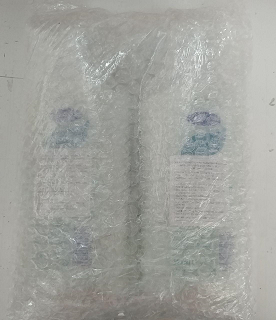
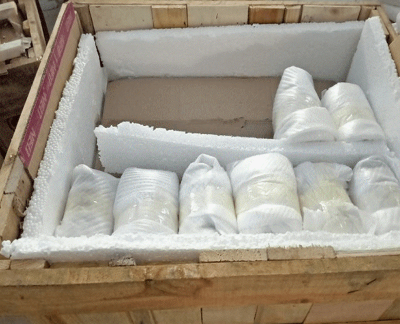
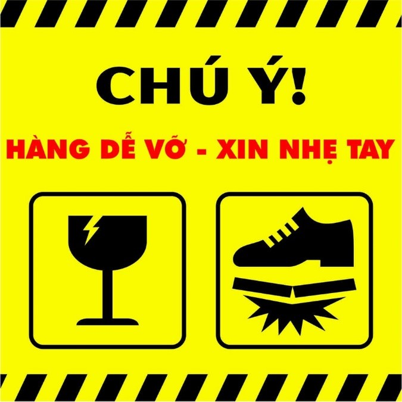
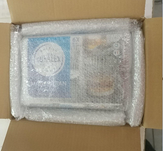
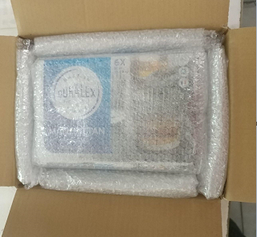
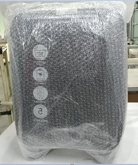
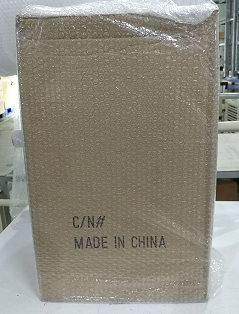
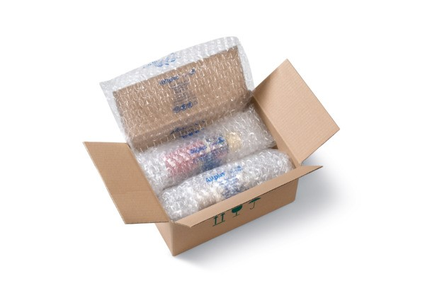

Quy định về Tiêu chuẩn đóng gói hàng hóa
I. Mục đích của việc ban hành tiêu chuẩn:
Quy định đóng gói được Công ty Cổ phần Vinacapital (sau đây gọi là BEST EXPRESS) đưa ra nhằm đảm bảo an toàn cho hàng hóa trong quá trình vận chuyển từ Người gửi tới Người nhận. Đóng gói đúng quy cách giúp bảo vệ hàng hóa, giảm tình trạng trả hàng, tiết kiệm chi phí cho Người gửi.
Khi có sự cố xảy ra trong quá trình vận chuyển, quy định đóng gói hàng hóa được lấy làm căn cứ quy chiếu trách nhiệm cho các bên liên quan.
II. Quy định đóng gói hàng hóa chung
- Tất cả các bưu kiện đều phải được đóng gói theo đúng quy định trước khi vận chuyển, BEST EXPRESS sau khi tiếp nhận hàng hóa sẽ chỉ chịu trách nhiệm vận chuyển hàng hóa theo nguyên tắc “nguyên đai, nguyên kiện, nguyên bao”, và chịu trách nhiệm theo quy định về đền bù hàng hóa của BEST EXPRESS
- BEST EXPRESS nhận vận chuyển hàng hóa có khối lượng tối đa là 80kg. Nếu sản phẩm nhỏ hơn 6 cm x 3 cm x 8 cm (tương ứng: dài x rộng x cao), Người gửi cần đóng gói sản phẩm vào phong bì để tránh thất lạc khi vận chuyển.
- BEST EXPRESS không nhận vận chuyển hàng nhiều kiện, mỗi bưu kiện phải có riêng một mã vận đơn. Trường hợp có nhiều mặt hàng nhỏ, cần phải đóng chung vào 1 kiện lớn duy nhất và đảm bảo an toàn theo tiêu chuẩn đóng gói trong quy định này.
- Hàng hóa đóng gói cần chịu được các tác động lực khi vận chuyển (xếp chồng, bốc vác, bê xếp…) và các tác động tự nhiên trong điều kiện môi trường bình thường (nhiệt độ, ánh sáng, độ ẩm).
- Khi đóng gói cần sử dụng vật nhồi chèn như giấy báo vò nhàu, hạt xốp hoặc giấy bọt khí (loại giấy có khả năng đàn hồi chống va đập cao) để chèn kín các khoảng trống, tránh sự chuyển động của hàng hóa bên trong hộp khi vận chuyển.
- Khi đóng gói sản phẩm phải đảm bảo không rơi sản phẩm ra khỏi bao bì trong quá trình vận chuyển (sử dụng băng keo để gói kín sản phẩm). Không được sử dụng dây thừng, dây vải để đóng gói sản phẩm.
- Với các mặt hàng dễ bị bẩn, ướt, cần đặt vào túi nylon dán kín bằng băng keo trước khi đóng gói.
- Tất cả các hóa đơn, chứng từ hay tài liệu hướng dẫn sử dụng cần để ở phía trong thùng hàng trước khi đóng gói, không dán bên ngoài thùng, ghi rõ nội dung (Ví dụ hóa đơn GTGT kèm số hóa đơn).
- Tất cả các bộ phận nhỏ hoặc các sản phẩm dạng hạt có thể bị đổ ra phải được đặt vào túi vải hoặc túi dệt plastic, rồi đóng gói hàng vào trong hộp cứng, sau đó đóng gói kín lại bằng băng keo.
- Đối với các hàng hóa có hình dạng đặc biệt hoặc khác thường, tối thiểu phải bao gói chống sốc hoặc bao bọc bằng giấy bìa cứng và dán băng keo cho tất cả các cạnh sắc nhọn hoặc lồi ra, đảm bảo sản phẩm không gãy khi chịu tác động và không làm thủng hoặc rách bao bì khi vận chuyển.
- Các hàng hóa đặc biệt như chất lỏng, hàng dễ vỡ, hàng dễ móp méo, dễ nóng chảy… phải được đóng gói cẩn thận và đáp ứng được với điều kiện vận chuyển. Những loại hàng hóa này phải được dán cảnh báo đặc biệt ở ngoài thùng hàng.
- Trên bao bì tất cả các bưu kiện cần có Mã vận đơn của đơn hàng, BEST EXPRESS yêu cầu khách hàng điền thêm:
1. Thông tin Khách hàng, bao gồm: Tên đầy đủ, số điện thoại, địa chỉ của người gửi và người nhận, thời điểm chấp nhận nhận bưu gửi.
2. Ghi chú hàng dễ vỡ hoặc không vận chuyển được bằng đường hàng không (nếu có ít nhất 01 sản phẩm trong bưu kiện thuộc sản phẩm không thể vận chuyển bằng đường hàng không), khuyến cáo đối với hàng hóa cần điều kiện đặc biệt để vận chuyển.
III.Quy định đóng gói chi tiết các mặt hàng thông dụng:
1. Hóa mỹ phẩm
- Hàng mỹ phẩm dạng chai lọ phải được bịt kín và dán kín nắp sản phẩm, đặc biệt phần nắp của các chai + chai dạng mỏ vịt cần cuộn để thành 1 khối có kích thước tương đồng với thân chai cố định đảm bảo chất lỏng không bị chảy ra ngoài (kể cả khi dốc ngược chai lọ).

Hình 1. Bịt kín và dán kín nắp chai.
- Bên ngoài sản phẩm được bọc kín được cuốn từ 3-4 lớp chống sốc (lưu ý với những chai mỹ phẩm dạng serum đựng bằng thủy tinh cần đóng gói chặt và kỹ hơn) cố định bằng băng dính, có chèn vật liệu chống va đập hoặc chống thấm nước (như xốp hoặc mút, hạt xốp, bubble, xốp mềm) giữa sản phẩm và hộp carton 3 lớp để lấp đầy khoảng không trong hộp tránh bị xê dịch và chịu được áp lực trong quá trình vận chuyển.
Hình 2. Bọc kín sản phẩm bằng bubble.

Hình 3. Chèn lót sản phẩm trong hộp carton.
2. Đồ thủy tinh, gốm sứ, hàng dễ vỡ
- Các sản phẩm bằng chất liệu: nhựa mỏng, thủy tinh, pha lê, sành, sứ, gốm, đất nung, thạch cao, sản phẩm chứa chất lỏng bên trong, v.v… khi vận chuyển sẽ có rủi ro rất lớn nếu không có chế độ cảnh báo và vận chuyển riêng. Do vậy, BEST EXPRESS có quyền từ chối hỗ trợ vận chuyển nếu đánh giá đơn hàng có rủi ro lớn khi vận chuyển hoặc do đối tác vận chuyển không đáp ứng được điều kiện để vận chuyển bưu kiện dễ vỡ.
- Nếu Người gửi vẫn mong muốn bán các sản phẩm này và yêu cầu BEST EXPRESS hỗ trợ vận chuyển, thì trách nhiệm gói bọc đảm bảo an toàn, cảnh báo bên ngoài kiện hàng và trách nhiệm rủi ro vận chuyển nếu xảy ra bể vỡ, hỏng hóc hoàn toàn thuộc về Người gửi.
- Sử dụng giấy bọt khí bọc kín mọi góc cạnh của sản phẩm từ 3 - 4 lớp.
Hình 4. Bọc kín sản phẩm bằng bubble.
- Đóng gói bằng hộp gỗ, phải chèn các vật liệu (như xốp hoặc mút, hạt xốp, bubble, xốp mềm) kín 6 mặt để đảm bảo hàng hóa không xê dịch và chịu được áp lực khi vận chuyển. Ở ngoài phải dán cảnh báo “hàng dễ vỡ”.
Hình 5. Đóng gói bằng hộp gỗ và chèn các vật liệu chống sốc.
Hình 6. Dán tem cảnh báo hàng dễ vỡ.
- Hàng hóa dễ vỡ dùng 02 lần hộp phải có lớp xốp bọc quanh bên ngoài hộp nhỏ.
 

Hình 7-8. Bao quanh bên ngoài hộp nhỏ bằng bubble và cố định hộp nhỏ trong hộp lớn.
3. Đồ điện tử, điện lạnh, đồ công nghệ
- Với đặc thù dễ hư hại nếu gặp môi trường có độ ẩm cao, trong quá trình bốc vác, di chuyển, các mặt hàng điện tử cần phải được đóng gói kỹ bằng các loại vật liệu chống va đập và chống ẩm (giấy bọt khí, mút mềm, mút xốp, nilon…), chèn lót xung quanh để không bị xê dịch khi vận chuyển.
- Người gửi phải ốp xốp mềm 06 mặt bên ngoài sản phẩm, lớp xốp cuốn yêu cầu độ dày là 2.5cm; sau đó, sử dụng giấy bọt khí bọc quanh lớp xốp đó ít nhất 02 lớp, dùng băng dính cố định chặt các góc của sản phẩm.
- Người gửi cần đóng gói bằng mút xốp các mặt của sản phẩm (theo “Quy định ốp xốp” bên dưới), sau đó bọc bằng giấy bọt khí bên ngoài; đồng thời có thêm tem ghi chú “hàng dễ vỡ”.
- Quy định ốp xốp với hàng nội tỉnh: Sản phẩm có 2 mặt tiếp xúc lớn, cần bọc bên ngoài bằng bubble chống sốc, sau đó đóng gói bằng mút xốp vào 2 mặt có diện tích lớn nhất và quấn băng keo xung quanh để cố định mút xốp và bubble; đồng thời có thêm tem ghi chú “hàng dễ vỡ”. Sản phẩm có 04 mặt tiếp xúc bằng nhau, cần đóng gói bằng mút xốp ở cả 04 mặt, trừ 02 mặt bé hơn sau đó bọc bằng bubble bên ngoài; đồng thời có thêm tem ghi chú “hàng dễ vỡ”. Sản phẩm có 06 mặt tiếp xúc bằng nhau, cần đóng gói bằng mút xốp ở tất cả các mặt sau đó bọc bằng bubble bên ngoài; đồng thời có thêm tem ghi chú “hàng dễ vỡ”. Mút xốp đóng gói được yêu cầu độ dày là 2.5cm.

Hình 9. Ốp xốp 2 mặt có diện tích lớn nhất và bọc kín sản phẩm bằng bubble.
- Quy định ốp xốp với hàng liên tỉnh: Tương tự quy định đối với hàng nội tỉnh cộng thêm: Đóng gói bằng mút xốp bên ngoài 06 mặt của hộp sản phẩm. Mút xốp đóng gói được yêu cầu độ dày là ≥ 2.5cm.
Hình 10-11. Ốp xốp 6 mặt cho sản phẩm.
- Với đơn có từ 02 sản phẩm trở lên: Đóng gói đúng quy cách như trên cho từng hộp sản phẩm trong đơn hàng. Sau đó, cố định toàn bộ khối hàng bằng việc quấn quanh bằng băng keo. Cuối cùng là bọc bằng màng co bên ngoài khối hàng và dán tem nhãn dễ vỡ. Khối hàng thống nhất không có kích thước vượt quá trọng lượng và kích thước quy định.
4. Sách & Văn phòng phẩm
- Với hàng hoá dạng mảnh như tranh vẽ, bản đồ, sách, báo, tạp chí, catalog, tài liệu … và những đồ dễ rách nát cần được bảo vệ và bọc kín sản phẩm bởi 2 lớp nylon hoặc màng co nhằm tránh để sản phẩm bị bẩn, ẩm ướt.
Hình 12. Bọc màng co sản phẩm tránh bị bẩn, ẩm ướt.
- Sau đó đóng gói vào thùng carton cứng có hình dạng phù hợp, không quá lớn so với sản phẩm và quấn quanh bằng băng keo để tránh sản phẩm bị rơi ra ngoài khi vận chuyển.
Hình 13. Dán kín hộp carton bằng băng keo.
5. Thực phẩm khô
- Các mặt hàng thực phẩm khô cần được đóng gói bằng nhiều lớp nylon hoặc giấy bọt khí (từ 2 đến 3 lớp) và cố định bằng băng dính, phải đảm bảo kiện hàng kín, có khả năng chống ẩm và chống va đập (với thực phẩm dễ vỡ vụn), hút chân không để không ảnh hưởng chất lượng thực phẩm sau quá trình vận chuyển.
- Quấn kỹ kiện hàng để tránh phát ra mùi thu hút động vật/côn trùng trước khi đóng hộp carton cứng.
- BEST EXPRESS chỉ bảo quản đơn hàng ở điều kiện thông thường, không chịu trách nhiệm bồi thường đối với các mặt hàng có điều kiện bảo quản riêng.
6. Chất lỏng (dầu ăn, nước giặt/xả, dầu gội…)
- Mỗi sản phẩm cần được bịt kín miệng chai với băng dính/nylon/màng bọc thực phẩm, sau đó quấn bubble chống sốc 02 lớp xung quanh sản phẩm.
Hình 14. Bọc kín miệng chai và bọc xung quanh sản phẩm.
- Đựng sản phẩm trong hộp carton, chèn mút xốp đủ 06 mặt xung quanh giữa hộp bìa carton và sản phẩm.

Hình 15. Chèn mút xốp xung quanh sản phẩm.
- Nếu có từ 02 sản phẩm trở lên, giữa các sản phẩm cần có mút xốp chèn ở giữa.
7. Quần áo, giày túi, bỉm tã
- Nếu sản phẩm không có hộp carton bên ngoài, phải đóng gói thêm một lớp bubble trước khi cho sản phẩm vào túi nylon thường và dùng băng keo bọc kín gói hàng.
- Các sản phẩm như quần áo, giày dép cần được gấp gọn trước khi đóng gói, quấn quanh sản phẩm từ 2 -3 lớp nylon hoặc màng co, sau đó cố định toàn bộ bằng băng keo để tránh rủi ro khi điều kiện thời tiết khách quan xảy ra.

Hình 16. Quấn quanh sản phẩm bằng nylon và cố định bằng băng keo.
- Các sản phẩm như giày, dép, túi xách bắt buộc phải có hộp carton bên ngoài sau khi đã cuốn 2- 3 lớp nylon.

Hình 17. Bao bọc quanh sản phẩm bằng nylon.
Hình 18. Cho sản phẩm vào hộp carton và chèn cố định sản phẩm.
- Trong trường hợp cần bảo quản cả hộp sản phẩm từ nhà sản xuất cần đóng gói bằng mút xốp 6 mặt hộp sau đó cố định toàn phần bằng băng keo và đặt trong hộp carton cứng.
Hình 19. Đóng gói bằng mút xốp để bảo quản cả hộp sản phẩm từ nhà sản xuất.
8. Đồ gia dụng lớn
8.1 Hàng gia dụng (nhựa cứng)
- Sử dụng giấy bọt khí bọc kín mọi góc cạnh sản phẩm từ 3-4 lớp và cố định toàn phần bằng băng keo.
Hình 20. Bao bọc sản phẩm bằng bubble.
- Sau đó sản phẩm cần được đặt trong thùng carton có kích thước phù hợp, có chèn xốp cố định sản phẩm để tránh va đập gây hư hỏng trong quá trình vận chuyển.
Hình 21. Đặt vào thùng carton và cố định sản phẩm.
8.2. Hàng gia dụng (trừ hàng nhựa cứng, điện gia dụng): chảo, nồi kim loại…
- Người gửi cần đóng gói kín sản phẩm, sử dụng giấy bọt khí bọc quanh sản phẩm ít nhất 02 lớp, dùng băng keo cố định toàn phần, sau đó cho vào trong hộp carton và chèn chặt các góc bằng mút xốp mềm.

Hình 22. Đóng gói kín sản phẩm bằng màng co và bubble.
- Với mặt hàng “chảo” (sản phẩm có hình dạng dị thường): Dùng mút xốp lấp đầy lòng chảo (không dùng bubble/nylon, dễ bị trũng, dễ hư hỏng vành chảo). Sau đó dùng bubble quấn 5 lớp toàn bộ chảo (cả lòng chảo và tay cầm), cố định bubble bằng băng keo, cho vào hộp carton có kích thước vừa với sản phẩm, sau đó chèn lót cố định sản phẩm và quấn quanh mặt ngoài của hộp carton bằng băng keo.
Hình 23. Đóng gói sản phẩm có hình dạng “dị thường”.
Hình 24. Cố định sản phẩm trong hộp carton.
9. Hộp thiếc, hộp giấy cứng (sữa bột, sơn….)
- Các sản phẩm này cần được cố định từ 2-3 lớp màng co để cố dịnh phần nắp với thân sản phẩm sau đó được bọc 3-4 lớp chống sốc có cố định bằng băng keo.
- Sau đó sản phẩm được đặt vào hộp carton có chèn mút xốp mềm để đảm bảo lấp đầy khoảng trống giữa hộp carton và sản phẩm tránh gây va đập, hư hỏng sản phẩm khi vận chuyển.
Hình 25. Bọc kín sản phẩm bằng bubble và cố định sản phẩm trong hộp carton.
10. Xếp nhiều hàng hóa nhỏ trong cùng gói hàng
- Cần tách riêng và bọc từng mặt hàng riêng sau đó mới xếp vào thùng carton. Cuối cùng dán băng keo sao cho miệng của hộp carton phải kín. Các sản phẩm tách riêng cũng cần đóng gói theo đúng quy định đối với loại sản phẩm đó.
- Không để sát nhau, khoảng không giữa 2 vật cần được lấp đầy bởi các vật liệu chống va đập.

Hình 26. Xếp nhiều hàng hóa nhỏ trong một hộp carton.
11. Lưu ý quan trọng
- Kiện hàng sau khi đóng gói không được phát ra tiếng động khi di chuyển do không chèn đủ xốp và bubble.
--------HẾT -------
Tìm hiểu về điều kiện và điều khoản gửi hàng

1.Định nghĩa
1.1"Chúng tôi", "BEST" có nghĩa là BEST Express.
1.2"Bạn" hoặc "các bạn" có nghĩa là Người gửi (hàng) và Người có tên tại mục "Người gửi hàng" trên Phiếu gửi hàng.
1.3"Người gửi" là người có tên tại mục "Người gửi hàng" trên Phiếu gửi hàng.
1.4"Người đi gửi hàng" có nghĩa là người mang gói hàng đến cho chúng tôi. Người đi gửi hàng không nhất thiết phải là người có tên ở mục "Người gửi hàng" trên Phiếu gửi hàng.
1.5"Người nhận" có nghĩa là người có tên ở mục "Người nhận hàng" trên Phiếu gửi hàng.
1.6"Người ký nhận" có nghĩa là người hoặc bên tiếp nhận gói hàng ở địa chỉ giao hàng.
1.7 "Gói hàng" có nghĩa là tất cả các gói hoặc bưu kiện được chúng tôi đề nghị và nhận chuyển phát thông qua một Phiếu gửi hàng duy nhất.
1.8 "Phiếu gửi hàng" có nghĩa là bất kỳ vận đơn giấy hoặc mẫu đơn điện tử có giá trị tương đương nào liên quan đến gói hàng.
1.9 "Ngày làm việc" có nghĩa là các ngày thứ hai đến thứ bảy, trừ ngày lễ được chính phủ nước Việt Nam qui định(Ngày nghỉ cụ thể có thể thay đổi theo thông báo của BEST)
2.Chấp thuận các "Điều khoản và điều kiện" của chúng tôi
Việc bạn sử dụng dịch vụ của BEST Express hoặc mang kiện hàng đến cho chúng tôi, đồng nghĩa với việc bạn đồng ý thay mặt cho Người gửi hàng, Người nhận hàng và bất kỳ người nào đang có hoặc nhận được quyền lợi từ kiện hàng, rằng bạn và người đó sẽ bị ràng buộc bởi Điều khoản và Điều kiện.
3.Danh mục hàng cấm gửi
3.1 Các mặt hàng sau đây thuộc mặt hàng không được phép vận chuyển và bạn đồng ý không đưa bất kỳ mặt hàng nào sau đây vào gói hàng vận chuyển:
3.1.1 Thuốc phiện, hợp chất từ thuốc phiện, các chất ma túy và chất kích thích thần kinh,
3.1.2 Vũ khí đạn dược, trang thiết bị kỹ thuật quân sự, vũ khí thô sơ như dao, kiếm, giáo, mác, lưỡi lê, đao, mã tấu, quả đấm, quả chùy, cung, nỏ...
3.1.3 Các loại văn hóa phẩm đồi trụy, phản động; ấn phẩm, tài liệu nhằm phá hoại trật tự công cộng chống lại Nhà nước Cộng hòa Xã hội Chủ nghĩa Việt Nam.
3.1.4 Vật hoặc chất dễ nổ, dễ cháy và các chất gây nguy hiểm hoặc làm mất vệ sinh, gây ô nhiễm môi trường.
3.1.5 Sinh vật sống, thực phẩm yêu cầu bảo quản.
3.1.6 Tiền Việt Nam, nước ngoài và các giấy tờ có giá trị như tiền; hóa đơn VAT, giấy tờ không thể cấp lại. Các loại kim khí quý (vàng, bạc, bạch kim…), các loại đá quí hay các sản phẩm khác được chế biến từ kim khí quí, đá quí.
3.1.7 Vật phẩm, hàng hóa là chất bột, ngoại trừ hàng hóa còn nguyên bao bì, nhãn mác của nhà sản xuất với đầy đủ thông tin về thành phần, nguyên liệu, công dụng, nguồn gốc xuất xứ của hàng hóa như sữa bột, bột ngũ cốc…
3.1.8 Vật phẩm, ấn phẩm, hàng hóa cấm nhập vào nước nhận. Các loại vật phẩm hàng hóa mà nhà nước cấm lưu thông, cấm kinh doanh, cấm xuất khẩu, nhập khẩu theo quy định của pháp luật Việt Nam, điều ước quốc tế mà Cộng hòa xã hội chủ nghĩa Việt Nam là thành viên.
3.2. Người gửi phải đền bù tất cả các khoản bồi thường, chi phí và phí phát sinh mà chúng tôi phải chịu do gói hàng của bạn có chứa vật phẩm được liệt kê trong Phần 3.1 gây ra. BEST Express có quyền hủy đơn hàng trên hệ thống và không vận chuyển hoàn lại. Người gửi hàng có thể tự đến nhận lại đơn hàng của mình. Nếu không BEST Express sẽ toàn quyền tiêu hủy đơn hàng.
4.Danh mục hàng miễn trừ trách nhiệm
4.1 Chúng tôi có thể nhận chuyển phát nhưng không chịu trách nhiệm bồi thường về các mặt hàng sau:
4.1.1 Thực phẩm khô, kẹo, sô cô la, thực phẩm dễ hỏng với bao bì thích hợp;
4.1.2 Phiếu quà tặng, phiếu giảm giá, thẻ quà tặng, tài liệu, hóa đơn, biên lai;
4.1.3 Bất kỳ sản phẩm lỏng nào như dầu, kem, huyết thanh, gel;
4.1.4 Ắc quy ô tô / xe máy hoàn toàn mới.
4.1.5 Vật phẩm dễ vỡ, vật phẩm mỏng manh, kính thiết kế, pha lê, khung ảnh, gạch lát sàn và các thiết bị điện tử hoặc bất kỳ mặt hàng nào có chứa áp lực nhạy cảm, v.v.
4.2 Chương trình bảo hiểm lô hàng không có sẵn cho những hàng được phân loại trong phần này.
5.Dịch vụ thu hộ tiền hàng COD và phụ thu COD
5.1. Nếu quý khách lựa chọn dịch vụ thu hộ COD, người chuyển hàng phải trả phụ phí COD.
5.2. Người gửi hàng chịu mọi rủi ro liên quan đến việc thu tiền thanh toán, bao gồm cả việc không thanh toán, không đủ tiền và giả mạo.
5.3. Trường hợp người gửi hàng muốn thay đổi COD. Cần có mail thông báo và gửi yêu cầu trước khi đơn hàng đến bưu cục phát của BEST. Nếu sau khi đơn hàng đã đến bưu cục phát và nhận được yêu cầu đổi COD. BEST có quyền từ chối yêu cầu và chỉ thu đúng COD theo vận đơn gắn trên kiện hàng. BEST có thể hủy đơn hàng nếu chưa giao cho khách hàng, người gửi hàng vui lòng tạo 1 đơn hàng mới theo số COD đúng.
6.Quyền kiểm tra hàng hóa
6.1 Chúng tôi có quyền mở và kiểm tra một lô hàng ngay cả khi chưa thông báo cho bạn vì lý do an toàn, an ninh, hải quan hoặc các lí do theo qui định khác.
6.2 Tương tự, có một số trường hợp các quan chức chính phủ có thể yêu cầu mở và kiểm tra một số Lô hàng nhất định. Chúng tôi cần tuân thủ theo các hướng dẫn từ họ. Việc thông báo trước cho người gửi hàng hoặc Người nhận hàng là không cần thiết.
7.Qui định bảo hành và bồi thường từ người gửi hàng
7.1 Vì lý do bảo mật, công ty yêu cầu người gửi hàng cung cấp tài liệu nhận dạng cá nhân (ví dụ: Thẻ CMND/CCCD Việt Nam, Hộ chiếu) cho nhân viên của chúng tôi để lưu hồ sơ.
7.2 Người gửi hàng sẽ cung cấp thông tin chính xác theo yêu cầu trong Ghi chú lô hàng, bao gồm nhưng không giới hạn:
7.2.1 Tên, địa chỉ (bao gồm mã bưu chính) và số liên lạc;
7.2.2 Tên người nhận, địa chỉ (bao gồm mã bưu chính) và số liên lạc;
7.2.3 Mô tả lô hàng, ví dụ: số lượng kiện hàng, giá trị khai báo, số lượng tiền mặt khi giao hàng (COD), nếu có;
7.2.4 Các hình thức dịch vụ; và các hướng dẫn đặc biệt khác, nếu có.
8.Phí giao hàng và các khoản phí khác
8.1 Phí giao hàng sẽ được Người đi gửi hàng thanh toán và được tính dựa trên các phương pháp sau:
8.1.1 Trọng lượng thực tế và trọng lượng DIM
8.1.2 So sánh trọng lượng thực tế và trọng lượng DIM (xem xét chiều dài * chiều rộng * chiều cao) cm/6000. Đối với phương pháp này, trọng lượng khác nhau có các khung giá khác nhau và phí giao hàng thực tế của gói hàng phụ thuộc vào khung giá của trọng lượng thực tế hoặc trọng lượng DIM, tùy theo giá trị nào cao hơn
8.2 Các khoản phí khác(ví dụ: phụ phí COD, phụ phí bảo hiểm, phụ phí giao hàng vào thứ bảy, phụ phí nhân lực, phụ phí hoàn trả, phụ phí dịch vụ chuyển phát nhanh đặc biệt) cũng có thể được áp dụng cho gói hàng của bạn. Tất cả các chi phí có thể thay đổi mà không cần thông báo trước
8.3 Trách nhiệm của chúng tôi đối với bất kỳ gói hàng nào giới hạn ở tổn thất và thiệt hại trực tiếp
8.4 Đối với hàng hóa có giá trị cao, Người gửi hàng hoặc Người gửi cần mua dịch vụ bảo hiểm của chúng tôi và chúng tôi sẽ thực hiện bồi thường theo chính sách nếu gói hàng bị mất hoặc hư hỏng.
9.Các điều khoản giao hàng
9.1 Việc giao hàng được xem là hoàn thành khi gói hàng được gửi đến địa chỉ của Người nhận hàng được chỉ định trong Ghi chú của gói hàng, không nhất thiết phải là tên cá nhân của Người nhận hàng.
9.2 Nếu Người nhận hàng không có sẵn tại địa chỉ, chúng tôi có thể giao gói hàng cho bất kỳ người nào có sẵn tại địa chỉ của Người nhận hàng (ví dụ: đồng nghiệp, thành viên gia đình, văn phòng quản lý), tiếp nhận địa chỉ của người nhận hàng hoặc bất kỳ người nào được người gửi hàng ủy quyền.
9.3 Vì sự an toàn của gói hàng, chúng tôi sẽ không giao gói hàng đến một địa điểm mà không có bất kỳ Người nhận nào, ngay cả khi có yêu cầu của Người gửi hàng và / hoặc Người nhận hàng.
9.4 Chúng tôi sẽ không giao gói hàng đến một địa chỉ khác với địa chỉ của Người nhận hàng cụ thể trong Ghi chú của gói hàng trừ khi có hướng dẫn từ Người gửi hàng. Người nhận hàng sẽ liên hệ với người gửi hàng để đưa ra những yêu cầu như vậy. Các trường hợp đổi địa chỉ khác huyện sẽ hủy đơn.
9.5 Sau ngày giao hàng ước tính, trong trường hợp giao hàng không thành công trong lần thử đầu tiên, chúng tôi sẽ cố gắng giao lại gói hàng trong 2 ngày làm việc khác trong vòng 3 ngày làm việc tiếp theo mà không phải trả thêm phí (nghĩa là sẽ có tối đa 3 lần giao hàng thực hiện). Hiện tại, BEST Express giao hàng cả thứ 7 và Chủ Nhật
9.6 Nếu chúng tôi tin rằng thông tin của Người nhận hàng do Người gửi hàng cung cấp là không chính xác hoặc không đầy đủ, chúng tôi sẽ tạm dừng chuyển phát gói hàng và nhận hướng dẫn từ người gửi hàng
9.7 Mặc dù chúng tôi sẽ nỗ lực để giao gói hàng theo lịch giao hàng thuộc công ty, nhưng chúng tôi sẽ không chịu trách nhiệm cho bất kỳ thiệt hại trực tiếp hoặc gián tiếp hay tổn thất nào do chậm trễ giao hàng.
10.Chỉnh sửa địa chỉ và định tuyến
"10.1. Nếu yêu cầu chỉnh sửa định tuyến được thực hiện sau khi người gửi hàng cung cấp địa chỉ chính xác, người gửi hàng có thể phải chịu thêm phụ phí. Nếu Người nhận hàng yêu cầu thay đổi địa chỉ giao hàng, Người nhận hàng sẽ liên hệ với Người gửi hàng - người sẽ hướng dẫn chúng tôi định tuyến lại
10.2 Tất cả các yêu cầu chỉnh sửa định tuyến có thể phải trả phụ phí.
11.Chứng thực giao hàng
11.1 Chữ ký yêu cầu từ Người nhận hàng sẽ được sử dụng để chứng thực việc giao nhận
11.2 Trong trường hợp Người nhận không phải là Người nhận hàng có tên trên vận đơn, chuyển phát nhanh của chúng tôi sẽ sử dụng các phương thức hợp lý để xác định danh tính của Người nhận. Chữ ký riêng của Người nhận sẽ được yêu cầu để chứng thực giao nhận
11.3 Trong những trường hợp đặc biệt không thể có được chữ ký, sẽ có ghi chú từ những người giao nhận của chúng tôi. Chữ ký có thể không được lấy vì nhiều lý do, bao gồm nhưng không giới hạn, ví dụ như sự bất lực về thể chất của Người nhận.
12.Gói hàng không gửi được và qui định trả hàng
12.1.1 Một gói hàng được xem là không thể gửi được trong một số trường hợp nhất định, chẳng hạn như khi Người gửi hàng yêu cầu hủy giao hàng và / hoặc trả lại gói hàng vì bất kỳ lý do gì.
12.2 Lô hàng không gửi được sẽ được trả lại cho Người gửi hàng với chi phí của Người gửi hàng, nếu không lô hàng đó có thể được phát hành, xử lý hoặc bán bởi chúng tôi mà không chịu bất kỳ trách nhiệm nào đối với Người gửi hàng hoặc bất kỳ ai khác.
12.3 Tất cả phí giao hàng và các chi phí khác được trả cho gói hàng sẽ không được hoàn lại.
12.4 Nếu gói hàng được trả lại tại điểm dịch vụ được chỉ định của Người gửi hàng, chúng tôi sẽ liên hệ với Người gửi hàng vào ngày đến và Người gửi hàng sẽ thu thập gói hàng đó trong vòng bảy (7) ngày làm việc, qua thời gian trên chúng tôi sẽ giải phóng hoặc bán gói hàng đó và không chịu bất kỳ trách nhiệm nào đối với Người gửi hàng hoặc bất kỳ ai khác.
13.Nộp đơn yêu cầu bồi thường
13.1 Chúng tôi sẽ không chịu trách nhiệm cho những gói vận chuyển bị mất, hư hỏng hoặc chậm trễ đối với bất kỳ mục nào được liệt kê trong Mục 3.1.
13.2 Nếu bạn muốn yêu cầu bồi thường thiệt hại hoặc một phần mất mát của gói hàng, bạn phải gửi yêu cầu bằng văn bản cho Dịch vụ chăm sóc khách hàng của BEST Express trong vòng mười bốn (14) ngày kể từ ngày giao hàng.
13.3 Khiếu nại được giới hạn ở một yêu cầu cho mỗi Lưu ý ký gửi.
13.4 Trách nhiệm của chúng tôi đối với bất kỳ gói hàng nào được giới hạn ở tổn thất và thiệt hại trực tiếp trên mỗi gói hàng đối với gói hàng không bảo hiểm.
13.5 Nếu Người gửi hàng hoặc Người gửi chọn dịch vụ bảo hiểm của chúng tôi, chúng tôi sẽ bồi thường theo các tiêu chuẩn tương ứng.
13.6 Bạn được yêu cầu nộp các tài liệu sau đây để tiến hành khiếu nại:
13.6.1 Mẫu Yêu cầu khiếu nại (có sẵn từ Dịch vụ Chăm sóc Khách hàng của BEST);
13.6.2 Bản sao chứng minh thư nhân dân Việt Nam (đối với công dân Việt Nam) hoặc hộ chiếu (đối với công dân không phải người Việt Nam);
13.6.3 Tài liệu chứng minh giá trị, ví dụ: biên lai, hóa đơn, hồ sơ giao dịch ngân hàng cùng với quảng cáo trên các trang web;
13.6.4(Nếu khiếu nại thay mặt công ty) Bản sao giấy đăng ký công ty và thư ủy quyền của bạn;
13.6.5(Nếu khiếu nại gói hàng bị hư hỏng) cần có hình ảnh của gói hàng bị hư hỏng , bao gồm các phần và đóng gói đã hư hỏng
13.7Chúng tôi sẽ không phản ứng đối với bất kỳ khiếu nại nào cho đến khi bạn đã thanh toán tất cả các chi phí vận chuyển và bạn không được khấu trừ số tiền khiếu nại của mình từ các khoản phí đó
13.8Chúng tôi có quyền thu hồi gói hàng hỏng từ bạn như một điều kiện bồi thường
14.Những trường hợp nằm ngoài tầm kiểm soát của chúng tôi
14.1Chúng tôi không chịu trách nhiệm cho bất kỳ mất mát hoặc thiệt hại phát sinh từ các trường hợp nằm ngoài tầm kiểm soát của chúng tôi. Chúng bao gồm nhưng không giới hạn ở:
14.1.1Bất kỳ hành động hoặc thiếu sót nào của một người không được tuyển dụng hoặc ký hợp đồng với chúng tôi, ví dụ: Người gửi hàng, Người nhận hàng, bên thứ ba, hải quan hoặc các quan chức chính phủ khác;
14.1.2Bất khả kháng, ví dụ chiến tranh (tuyên bố hoặc không được tuyên bố), đảo chính, nổi loạn, khởi nghĩa, khủng bố, bắt giữ con tin, đánh bom hoặc sử dụng vũ khí chiến tranh, hoặc bất kỳ phản ứng nào, bao gồm chỉ huy các tài liệu, đình công, Thiên tai, ví dụ Lũ lụt, động đất, bão.
15.Điều khoản luật áp dụng
Các Điều khoản và Điều kiện sẽ được điều chỉnh theo luật pháp quốc gia và các bên chịu trách nhiệm không thể hủy bỏ phán quyết độc quyền của tòa án quốc gia
16.Quyền tiếp nhận giải thích
Công ty cổ phần Vinacapital Việt Nam là đơn vị chịu trách nhiệm giải quyết cuối cùng.